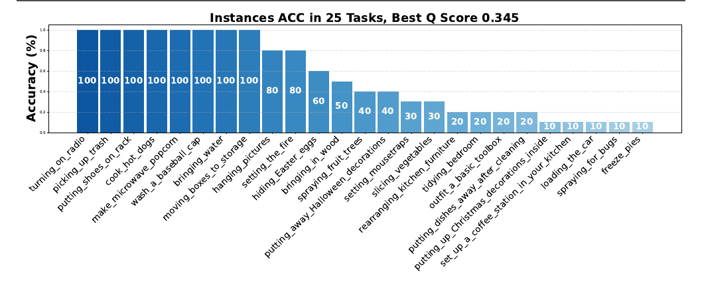
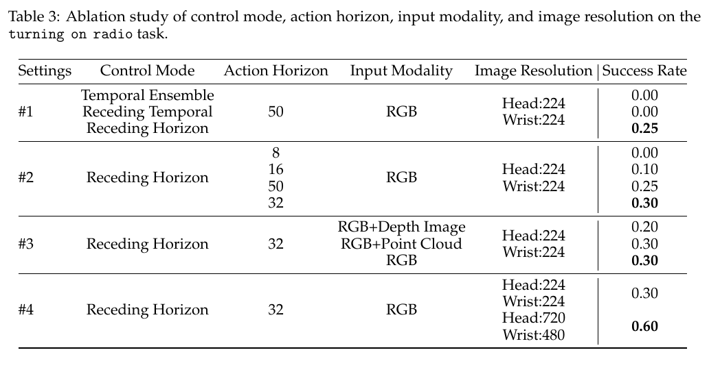

We test one claim from Openpi Comet (arXiv:2512.10071v3).
The report gives 1.00 for turning_on_radio. We measure 0 successes in 40 runs.
| Run | Report | n | Ours | 95% CI |
|---|---|---|---|---|
| RTX 3090 | 1.00 | 20 | 0.00 | [0.00, 0.16] |
| RTX 5090 | 1.00 | 20 | 0.00 | [0.00, 0.16] |
| Combined | 1.00 | 40 | 0.00 | [0.00, 0.09] |
A rate of 1.00 cannot produce 40 failures.

Figure 4 from the report. turning_on_radio is the first bar, at 100.

Table 3 from the report. All rows use turning_on_radio.
| Item | Value | Why |
|---|---|---|
| Control mode | Receding horizon | Best in row #1. The other two give 0.00 |
max_len |
32 | Matches the checkpoint chunk size |
| Resolution | Native, 720 and 480 | Better in row #4. 0.60 against 0.30 |
| Policy | pi05-b1kpt50-cs32 |
The released checkpoint |
| Instances | 20 | The public file supplies 20. The report used 10 |
Stack: BEHAVIOR-1K v3.7.2, Isaac Sim 4.5, numpy 1.26.4.
We ran the same policy on training instances.
| Set | Runs | Successes | Rate | 95% CI |
|---|---|---|---|---|
| Train | 67 | 4 | 0.06 | [0.02, 0.14] |
| Test | 40 | 0 | 0.00 | [0.00, 0.09] |
All four successes scored a full 1.000. A failed episode runs to the 4300-step cap. The successes stopped at 1329 and 1632 steps, so the harness detects completion.
The intervals overlap. We do not claim a train and test gap.
Four training instances ran twice. Two changed outcome.
| Instance | First run | Second run |
|---|---|---|
| 1 | 0.000 | 1.000 |
| 4 | 1.000 | 0.000 |
Both successes come from instances that failed on their other run. Figure 4 gives 1.00 from ten single runs. Table 3 values move in steps of 0.05 to 0.10. Those values carry variance the tables do not show.
Three readings.
Reading 2 does not resolve. The README calls the same files both things.
| Evidence | Points to |
|---|---|
| Built 2025-12-30, between the two releases | The Q 0.345 model |
| Model card: "the latest model weights" | The Q 0.345 model |
Directory name pi05-b1kpt50-cs32 |
The pre-training config |
| README: "base ... ideal for fine-tuning" | The pre-training model |
Reading 3 is limited by the control. A dead harness cannot score 1.000.
Table 3 row #4 compares 224x224 against native. We cannot repeat it.
Three faults block the documented path.
base_config.yaml points at behavior.learning.wrappers.RGBWrapper. After the README install step the package is omnigibson.learning. Hydra raises InstantiationException.setup.sh installs numpy 1.26.4. The --joylo dependencies upgrade it to 2.x. This breaks the ABI and og.launch() gives a segmentation fault.setup.sh downloads the 2026 task instances. eval_custom.py reads the 2025 instances. Nothing downloads them.Fixes are in this fork.
Isaac Sim needs RT Cores. The A100, H100 and V100 do not have them.
The RTX 5090 runs the benchmark on driver 580.173.02. It gives a segmentation fault on driver 595.84. See the hardware page.
Figures are from the report, used under CC BY 4.0.